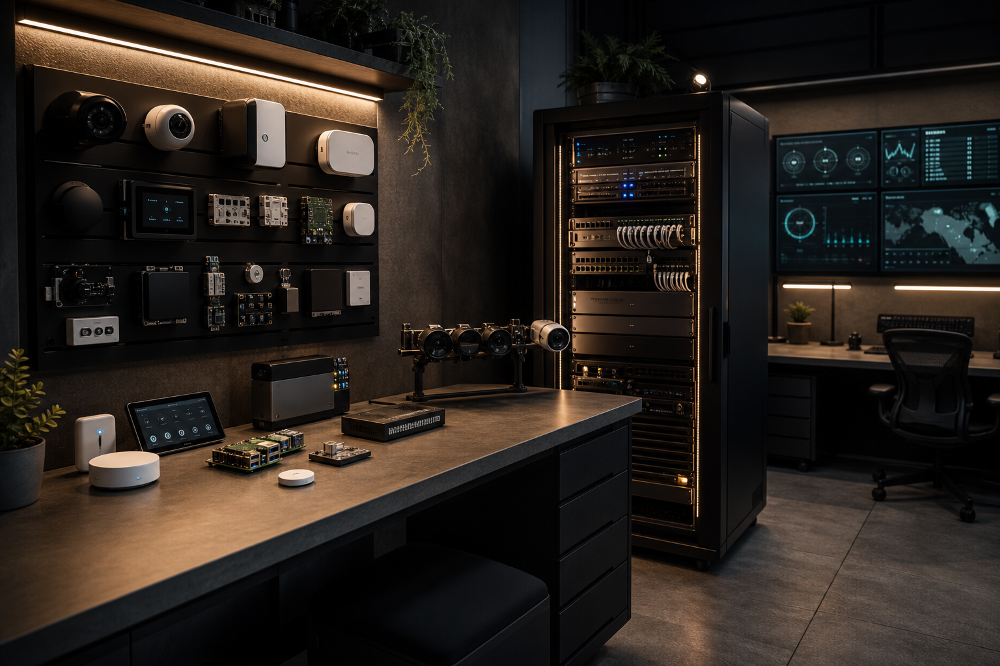

Lab
Un laboratoire privé pour apprendre, tester et documenter.
Home Assistant, serveurs, caméras, IA locale, réseaux et dashboards sont testés comme un système complet, pas comme une collection de gadgets.
État réel
Ce qui roule, ce qui est testé, ce qui est planifié.
Architecture
La fondation d'un système intelligent commence par le réseau.
Le lab sert à valider les choix avant de les recommander: accès privé, séparation IoT, caméras locales, automatisation et interface humaine.
Home Assistant
Réseau privé
Caméras
IA locale
Serveurs
Dashboards
Stack